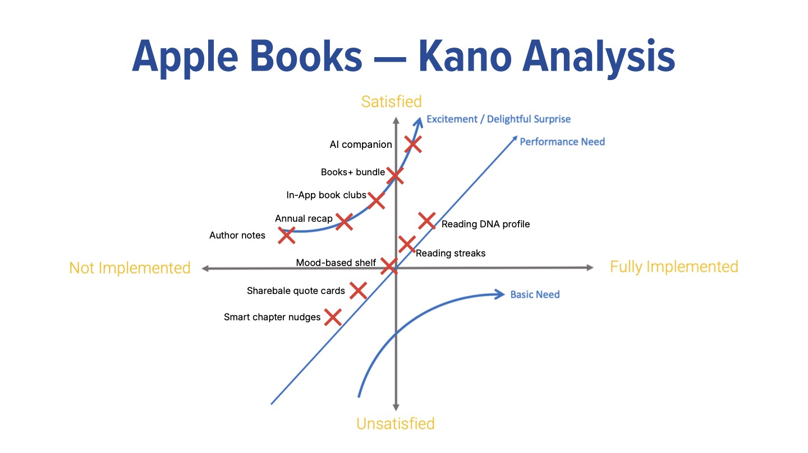

The Kano Analysis maps 10 Apple Books feature concepts across two axes: degree of implementation (not implemented to fully implemented) and customer satisfaction (unsatisfied to satisfied). Features are categorized as Basic Needs, Performance Needs, or Excitement/Delight features.

Feature Classification Summary
| Feature | Category | Rationale |
|---|---|---|
| AI Companion | Excitement/Delight | High satisfaction potential when not yet expected |
| Books+ Bundle | Excitement/Delight | Removes per-book pricing friction entirely |
| In-App Book Clubs | Excitement/Delight | Social reading is unexpected from Apple Books |
| Annual Recap | Excitement/Delight | Emotional, shareable - like Spotify Wrapped |
| Author Notes | Excitement/Delight | Rare and intimate - only possible at Apple's publisher scale |
| Reading DNA Profile | Performance Need | More personalization = more satisfaction |
| Reading Streaks | Performance Need | More streak features = more retention |
| Mood-Based Shelf | Neutral | At the intersection - could go either direction |
| Shareable Quote Cards | Basic Need leaning | Expected in modern reading apps - lack causes dissatisfaction |
| Smart Chapter Nudges | Basic Need leaning | Habit-support features are expected baseline behavior |